Notebook
This page is generated from a Quarto vignette executed against real
public datasets. The source lives in
vignettes/ in the repository.
Plot gallery¶
Plot functions organized by analysis task
Use this gallery to find a plot by analysis task. Each section gives the relevant functions, the input type used in the example, and a compact code example. Links point to the workflow pages when more biological or technical context is useful.
[1]:
import sys, pathlib
sys.path.insert(0, str(pathlib.Path("_includes").resolve()))
from setup import configure_warnings, ensure_matplotlib_initialized
ensure_matplotlib_initialized()
configure_warnings()
import numpy as np
import pandas as pd
import ggnomics as gg
from plotnine import theme_bw, theme, labs, element_text
[2]:
from data import (
load_zeisel_subset, run_scranpy_pipeline_on_zeisel, load_baron,
run_deseq2_on_emtab1625, load_pbmc_cite_seq, run_scranpy_pipeline_on_cite_seq_rna,
load_tcr_repertoire,
)
zeisel_subset = load_zeisel_subset()
zeisel_final = run_scranpy_pipeline_on_zeisel()
baron = load_baron()
baron_cd = baron.get_column_data().to_pandas()
bulk_fit = run_deseq2_on_emtab1625()
mods, _note = load_pbmc_cite_seq()
cite_final = run_scranpy_pipeline_on_cite_seq_rna()
tcr = load_tcr_repertoire()
Package 'multiassayexperiment' is not installed.
Reduced dimensions¶
Function |
Purpose |
Type used |
Dataset |
|---|---|---|---|
|
UMAP scatter |
|
Zeisel |
|
PCA scatter |
|
Zeisel |
|
Generic embedding plot (any key) |
|
Zeisel |
|
Single-cell PCA computed via scikit-learn (no scranpy) |
|
Zeisel subset |
|
Single-cell UMAP via |
|
Zeisel subset |
|
Bulk/SE PCA |
|
E-MTAB-1625 (VST) |
[3]:
gg.plot_umap(zeisel_final, color="clusters") + theme_bw() + labs(title="plot_umap — full workflow: single-cell-scranpy.qmd")
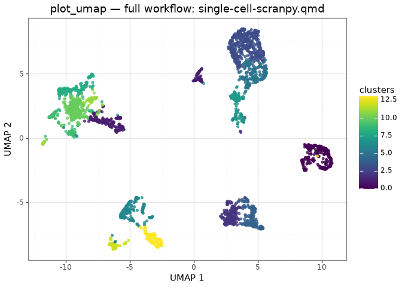
plot_reduced_dim and dim_plot are aliases of plot_embedding. plot_tsne selects X_tsne; here those coordinates were calculated by run_all_neighbor_steps_se together with PCA and UMAP:
[4]:
p_reduced = gg.plot_reduced_dim(zeisel_final, dimred="X_pca", color="clusters") + theme_bw() + labs(title="plot_reduced_dim")
p_dim = gg.dim_plot(zeisel_final, dimred="X_umap", color="clusters") + theme_bw() + labs(title="dim_plot (alias)")
p_tsne = gg.plot_tsne(zeisel_final, color="clusters") + theme_bw() + labs(title="plot_tsne")
p_reduced / p_dim / p_tsne
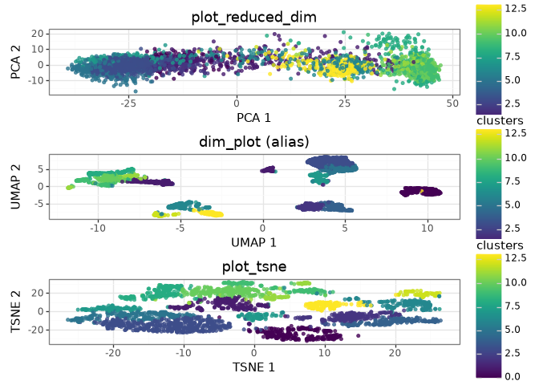
ggnomics.sc_pca and ggnomics.sc_umap provide PCA and UMAP through scikit-learn and umap-learn, without a scranpy dependency. The top-level ggnomics.plot_pca only displays coordinates already stored in the input object.
[5]:
sub2 = load_zeisel_subset()
gg.sc_pca.run_pca(sub2, assay_name="counts", dest_key="PCA", n_components=10)
gg.sc_umap.run_umap(sub2, assay_name="counts", dest_key="UMAP")
p_pca = gg.sc_pca.plot_pca(sub2, color="level1class") + theme_bw() + labs(title="sc_pca (sklearn)")
p_umap = gg.sc_umap.plot_umap(sub2, color="level1class") + theme_bw() + labs(title="sc_umap (umap-learn)")
p_pca | p_umap
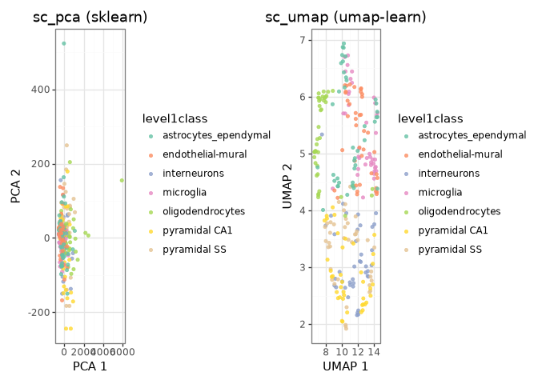
bulk_pca.plot_pca is demonstrated in full in Bulk RNA-seq §7.
Expression distributions¶
Function |
Purpose |
Type used |
Dataset |
|---|---|---|---|
|
Faceted violin per feature/group |
|
Zeisel |
|
Violin + automatic significance brackets |
|
Zeisel |
|
Box + automatic significance brackets |
|
Zeisel |
|
Predecessor of |
|
Zeisel |
|
KDE ridge plot per group |
|
Zeisel |
See Specialized plots for statistical annotations and significance brackets.
[6]:
cd = zeisel_final.column_data.to_pandas()
gg.expression_violin(cd.assign(Snap25=np.asarray(zeisel_final.get_assay("logcounts")[list(zeisel_final.get_row_names()).index("Snap25"), :]).ravel()), value="Snap25", group="level1class") + theme_bw() + theme(axis_text_x=element_text(rotation=45, hjust=1)) + labs(title="expression_violin (legacy API)")
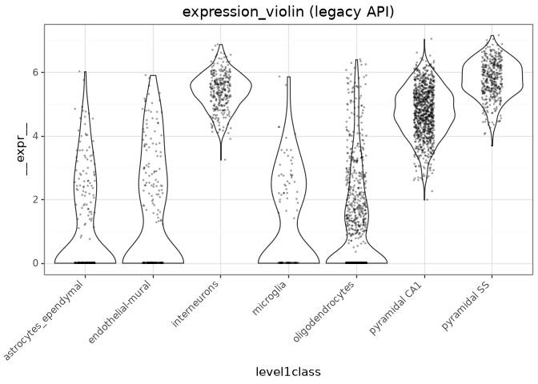
[7]:
gg.ridge_density(cd, value="detected", group="level1class") + theme_bw() + theme(axis_text_x=element_text(rotation=45, hjust=1)) + labs(title="ridge_density — genes detected per class")
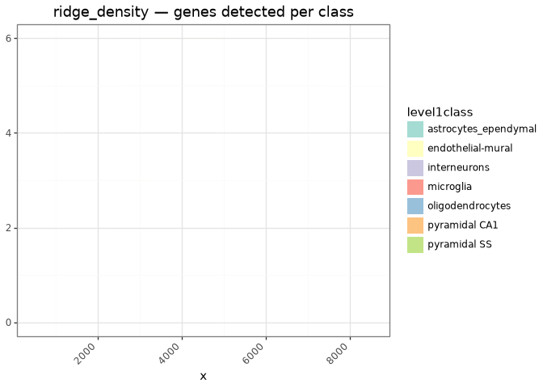
Metadata plots¶
Function |
Purpose |
Type used |
Dataset |
|---|---|---|---|
|
obs/colData scatter, violin, box, bar, strip |
|
Zeisel |
|
var/rowData scatter |
|
Zeisel (HVG stats) |
|
Simple QC scatter |
|
Zeisel |
|
Histogram of one column |
|
Zeisel |
[8]:
gg.plot_rowdata(zeisel_final, x="mean", y="variance") + theme_bw() + labs(title="plot_rowdata — HVG mean-variance trend (row_data)")
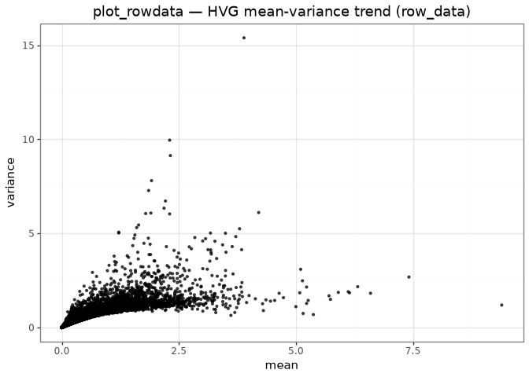
[9]:
gg.qc_scatter(cd, x="sum", y="detected") + theme_bw() + labs(title="qc_scatter (legacy)")
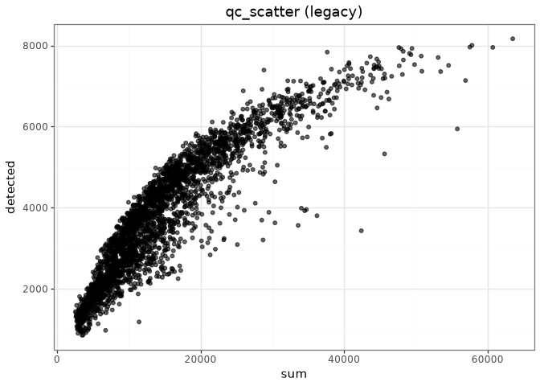
[10]:
gg.qc_histogram(cd, value="subset_proportion.mito", bins=40) + theme_bw() + labs(title="qc_histogram (legacy) — mitochondrial proportion")
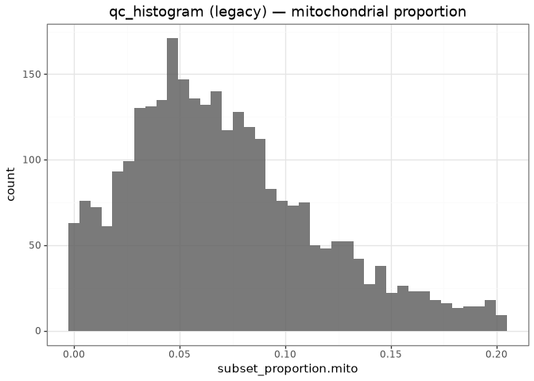
Scatter plots¶
Function |
Purpose |
Type used |
Dataset |
|---|---|---|---|
|
General x/y scatter |
|
Zeisel |
|
Scatter + marginal densities ( |
|
Zeisel |
|
Scatterplot matrix of embedding components |
|
Zeisel subset |
|
Grid of embedding panels, one per feature ( |
|
Zeisel |
[11]:
gg.plot_scatter(cd, x="sum", y="detected", color="level1class") + theme_bw() + labs(title="plot_scatter")
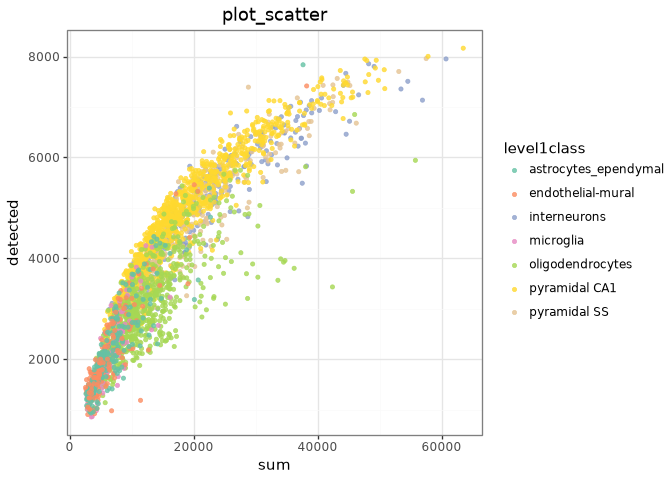
[12]:
gg.plot_scatter_marginal(cd, x="sum", y="detected", color="level1class")
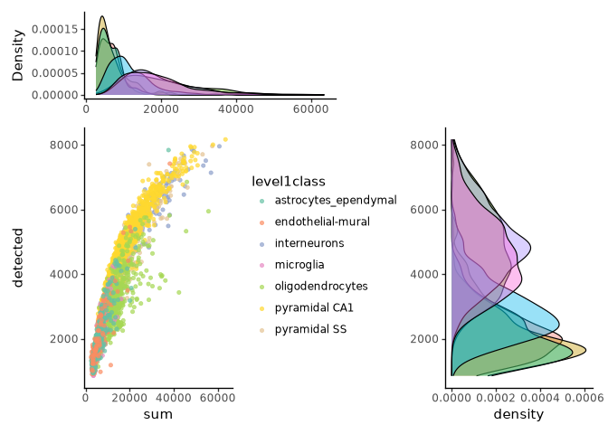
[13]:
gg.plot_pairs(sub2, dimred="X_pca", n_components=4, color_by="level1class")
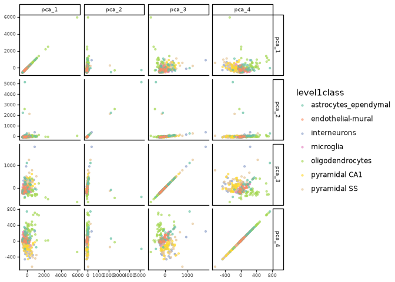
[14]:
gg.plot_embedding_panel(zeisel_final, features=["Gfap", "Mog", "Gad2", "Aif1"], dimred="X_umap", ncol=2)
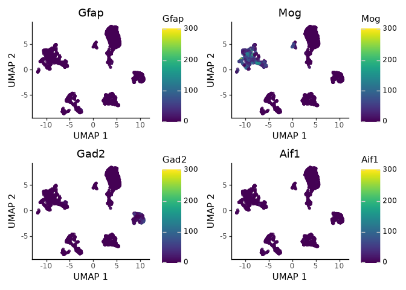
Abundance and composition¶
Counts, fractions, and donor-aware grouping are shown in Specialized plots.
Function |
Purpose |
Type used |
Dataset |
|---|---|---|---|
|
Stacked composition bar |
|
Baron |
|
Predecessor of |
|
Baron |
[15]:
gg.cluster_composition_barplot(baron_cd, cluster_col="label", group_col="donor") + theme_bw() + theme(axis_text_x=element_text(rotation=45, hjust=1)) + labs(title="cluster_composition_barplot (legacy)")
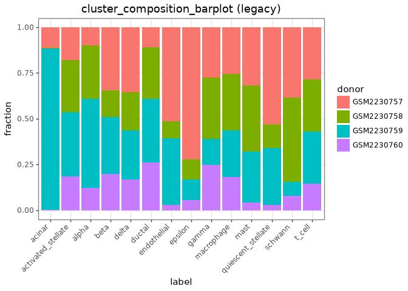
QC¶
plot_pseudobulk_qc is demonstrated with the four Baron donors in Specialized plots. RNA and ADT quality-control plots are covered separately in Multimodal.
Dot plots¶
Function |
Purpose |
Type used |
Dataset |
|---|---|---|---|
|
Mean expression x fraction expressing |
|
Zeisel |
|
Tidy-table dot plot |
|
Zeisel |
|
Matrix-in dot plot |
|
Zeisel |
[16]:
markers = ["Gfap", "Mog", "Gad2", "Snap25"]
gfap_idx = [list(zeisel_final.get_row_names()).index(g) for g in markers]
expr_mat = np.asarray(zeisel_final.get_assay("logcounts")[gfap_idx, :])
expr_df = pd.DataFrame(expr_mat.T, columns=markers)
p = gg.marker_dotplot_from_matrix(expr_df, groups=cd["level1class"].to_numpy(), genes=markers, expr_threshold=0.1)
p + theme_bw() + theme(axis_text_x=element_text(rotation=45, hjust=1)) + labs(title="marker_dotplot_from_matrix (legacy)")
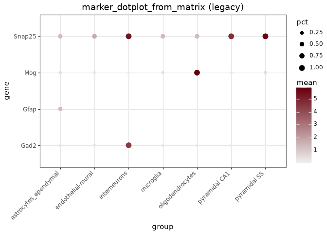
Highest-expressed features¶
[17]:
gg.plot_highest_exprs(zeisel_final, n=15, layer="counts") + theme_bw() + labs(title="plot_highest_exprs — Zeisel")
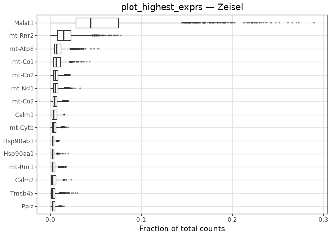
Heatmaps¶
Function |
Purpose |
Type used |
Dataset |
|---|---|---|---|
|
Expression heatmap, optional clustering |
|
Zeisel, Baron, E-MTAB-1625 |
|
Matrix-in heatmap |
|
Zeisel |
|
Tidy long-format heatmap |
|
Zeisel |
Marsilea ( |
Composable clustered heatmap (interop, not wrapped by ggnomics) |
|
E-MTAB-1625 |
For grouped, bulk, and Marsilea heatmaps, see: Single-cell analysis §11, Bulk RNA-seq §10, Specialized plots.
[18]:
gg.heatmap_from_matrix(expr_mat, row_names=markers, col_names=None, zscore_rows=True) + theme(axis_text_x=element_text(size=3))
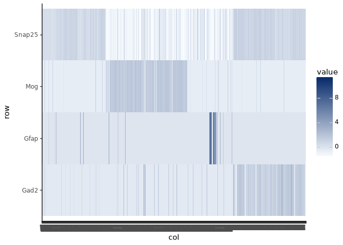
Differential expression¶
The complete analysis is shown in Bulk RNA-seq, with additional visualizations in Specialized plots.
Function |
Purpose |
Type used |
Dataset |
|---|---|---|---|
|
Volcano plot |
|
E-MTAB-1625 |
|
MA plot |
|
E-MTAB-1625 |
|
Top-n coefficients, lollipop |
|
E-MTAB-1625 |
|
Expression of top-coefficient features |
|
E-MTAB-1625 |
|
Predecessor of |
|
E-MTAB-1625 |
[19]:
results = bulk_fit["results"]
gg.volcano_plot(results.rename(columns={"log2FoldChange": "log2fc", "padj": "padj"}), log2fc="log2fc", padj="padj") + theme_bw() + labs(title="volcano_plot (legacy)")
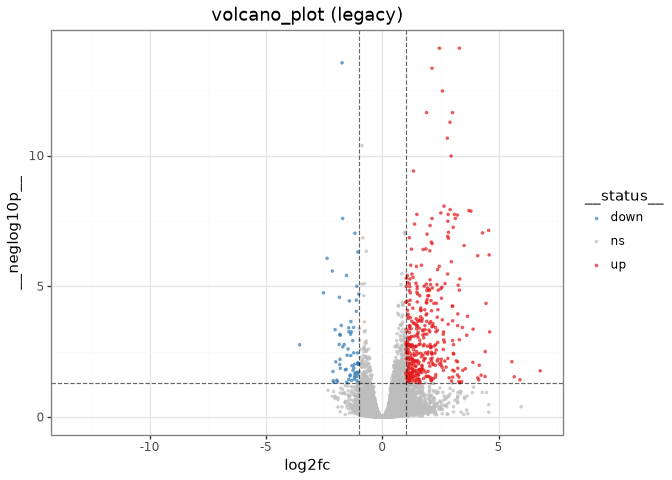
[20]:
coefs = results[["log2FoldChange"]].rename(columns={"log2FoldChange": "coefficient"}).dropna()
data = bulk_fit["vst"].copy()
data["growth_condition"] = bulk_fit["metadata"]["growth_condition"].to_numpy()
gg.plot_coef_expression(data, coefs, group_by="growth_condition", top_n=10, plot_type="dot") + theme_bw() + theme(axis_text_x=element_text(rotation=45, hjust=1)) + labs(title="plot_coef_expression")
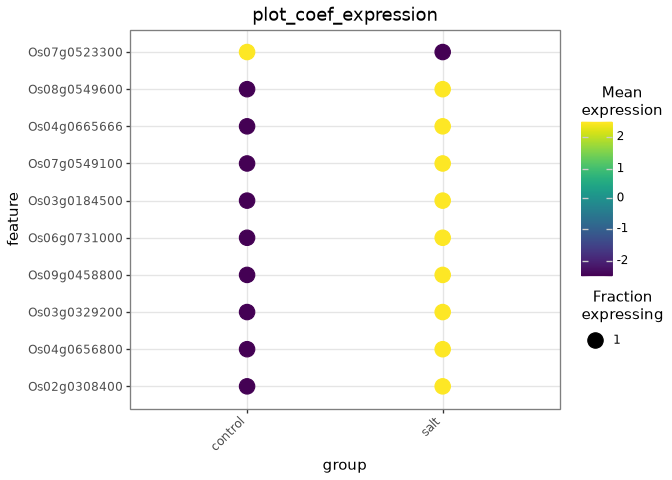
Pseudobulk¶
plot_pseudobulk_qc is fully covered on Baron in Specialized plots. plot_pseudobulk_de accepts a dict[str, DataFrame] of differential- expression results. Here the keys identify the three E-MTAB-1625 time points:
[21]:
per_timepoint = {tp: run_deseq2_on_emtab1625(tp)["results"] for tp in ["1 hour", "5 hour", "24 hour"]}
results_by_tp = {tp.replace(" ", "_"): df for tp, df in per_timepoint.items()}
{k: int((df["padj"] < 0.05).sum()) for k, df in results_by_tp.items()}
{'1_hour': 14, '5_hour': 8, '24_hour': 832}
[22]:
gg.plot_pseudobulk_de(results_by_tp, mode="volcano", ncol=3)
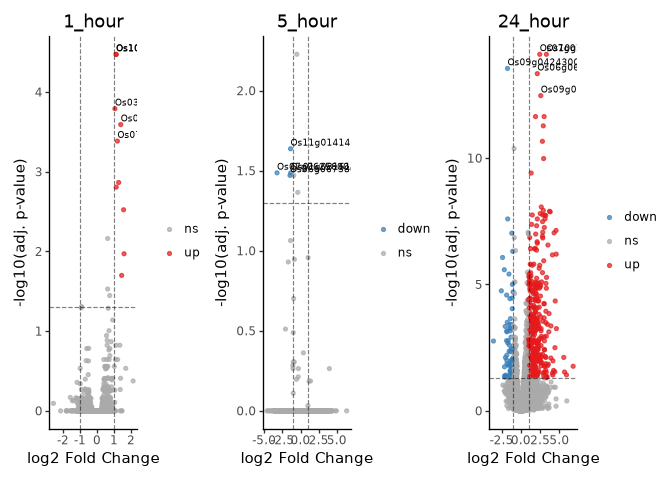
[23]:
gg.plot_pseudobulk_de(results_by_tp, mode="summary_bar") + theme_bw()
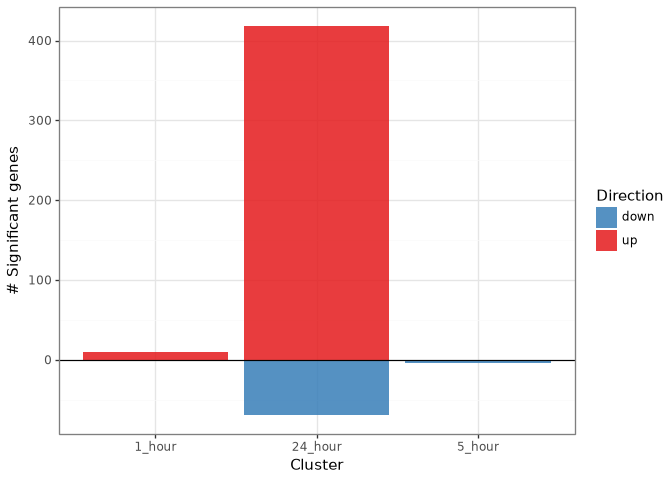
mode="upset" uses the native ggnomics.upset backend (part of the normal package — no extra install required for plotting) and returns an ordinary plotnine.composition.Compose, showing which significant genes are shared across timepoints:
[24]:
gg.plot_pseudobulk_de(results_by_tp, mode="upset")
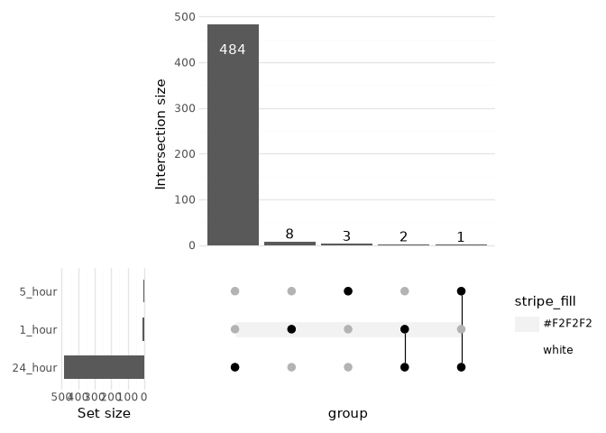
Native UpSet plots¶
ggnomics.upset is a native Plotnine set-intersection (“UpSet”) plot implementation — no Matplotlib-based upsetplot dependency. See UpSet plots for the full workflow (computation internals, region-selection modes, highlighting, custom annotations, Venn helpers, and the statistical-comparison caveats); this table is a compact function index.
Function |
Purpose |
|---|---|
|
High-level plot: raw data or prepared |
|
The compute -> select -> apply pipeline behind |
|
Built-in and custom annotation panels |
|
Matrix, marginal set-size, and stripe styling |
|
Highlight a set, intersection, or (not yet implemented) group |
|
Per-component theme collections |
|
Optional ( |
|
Approximate 2-4 set Venn diagrams |
Multimodal¶
See Multimodal for the RNA/ADT workflow and the input requirements of plot_adt_qc.
[25]:
import mudata as mu
mu.set_options(pull_on_update=False)
mdata = mu.MuData({"rna": mods["rna"], "prot": mods["adt"]})
gg.plot_bimodal_scatter(mdata, x_feature="CD3E", y_feature="CD3", x_mod="rna", y_mod="prot") + theme_bw() + labs(title="plot_bimodal_scatter — reused from multimodal.qmd")
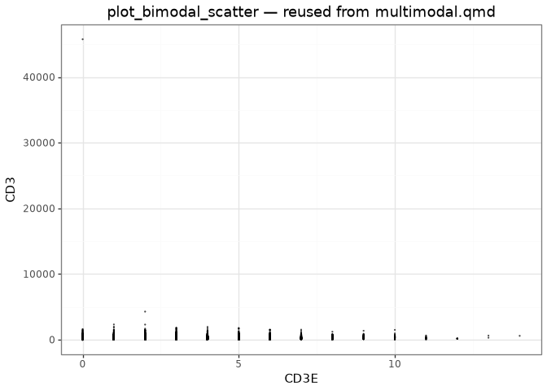
Repertoire¶
The repertoire workflow is described in Specialized plots.
[26]:
trb = tcr[(tcr["chain"] == "TRB") & (tcr["raw_clonotype_id"] != "None")].dropna(subset=["v_gene", "j_gene"])
cell_level = trb.drop_duplicates(subset=["barcode", "condition"])
gg.plot_clonotype_abundance(cell_level, clonotype_col="clonotype_id", sample_col="condition", top_n=10) + theme_bw() + theme(axis_text_x=element_text(rotation=45, hjust=1))
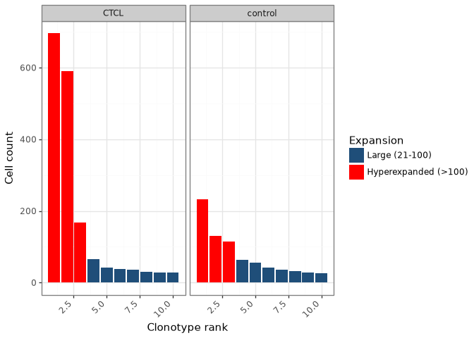
Significance brackets (ggnomics.signif)¶
Function |
Purpose |
|---|---|
|
ggsignif-style bracket layer/geom |
|
Pairwise statistical tests |
|
p-value -> star label |
[27]:
from ggnomics import run_comparisons, map_pvalue_to_stars
two_classes = cd[cd["level1class"].isin(["astrocytes_ependymal", "oligodendrocytes"])].copy()
gfap_idx = list(zeisel_final.get_row_names()).index("Gfap")
two_classes["Gfap"] = np.asarray(zeisel_final.get_assay("logcounts")[gfap_idx, :])[cd["level1class"].isin(["astrocytes_ependymal", "oligodendrocytes"]).to_numpy()]
stats_table = run_comparisons(two_classes["Gfap"], two_classes["level1class"], comparisons=[("astrocytes_ependymal", "oligodendrocytes")])
stats_table